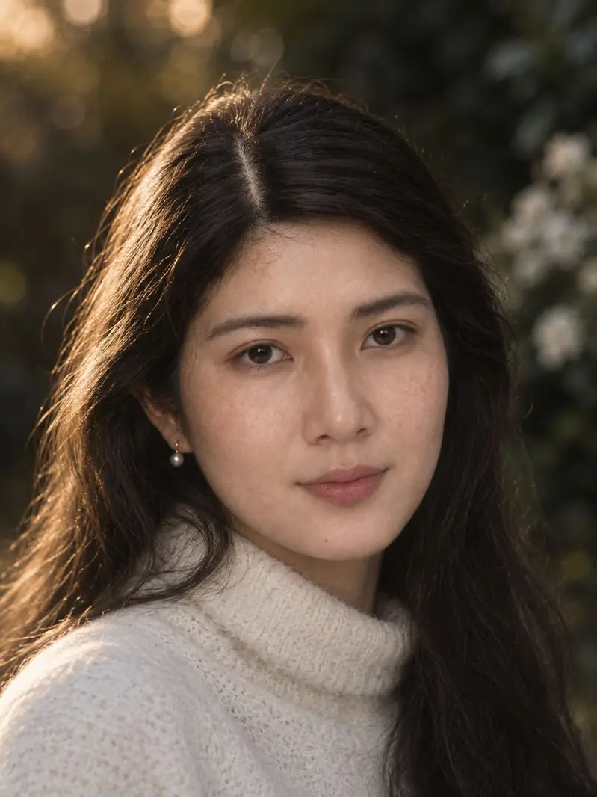

3:4រូបថតសួនច្បារ ពេលល្ងាចGolden hour garden portrait
📎 បញ្ចូលរូបមុខច្បាស់ ១សន្លឹក របស់អ្នកUpload 1 clear front photo of your face
Use the person from the attached photo exactly: same face shape, eyebrows, eyes, nose, lips, jawline, any moles, skin tone and hairstyle. Do not change the identity. Do not copy any other person's face. SHOT: Head-and-shoulders portrait, the person turns the body slightly away and looks back over the shoulder straight into the lens, calm soft half-smile. FACE: [describe your own face in a few words, for example: oval face, thick straight eyebrows, dark brown almond eyes, soft rounded nose tip, full lips, light stubble, small mole on the left cheek] SKIN: [your skin tone, e.g. warm golden-tan], real skin texture with visible pores, fine lines, natural sheen, no airbrushing. A few natural freckles on the cheeks are fine. HAIR: long, loose and natural, a few flyaway strands lit from behind. OUTFIT: chunky cream wool turtleneck sweater with visible knit texture; small pearl drop earring. SETTING: garden at sunset, dark green leaves and small white flowers on the right, soft warm bokeh circles in the background. LIGHTING: low golden-hour sun 3000K from behind-left as a rim light on the hair and shoulder; soft bounce fill on the face so both eyes are clear. CAMERA: Canon EOS R5, 85mm f/1.4 at f/1.8, 1/500s, ISO 100. Eyes sharp, background melted. CONDITION: fine film grain, gentle warm halation, soft vignette. NO EXTRA: no text, no logo, no watermark, no plastic skin, no extra fingers, no distorted hands, no heavy makeup. --ar 3:4